Индивидуальный проект. Этап 1: Образование планетной системы

Аннотация
В отчёте представлены результаты первого этапа проекта по математическому моделированию образования планетной системы. Рассмотрены происхождение звёзд и звёздных систем, формирование Солнечной системы с акцентом на роль момента импульса, третий закон Кеплера и его применение к протопланетному диску. Предложена математическая модель, включающая гравитационное взаимодействие, отталкивание и трение при контактах частиц, а также механизм аккреции. Описан численный метод (алгоритм Верле) и способы ускорения вычислений (Particle‑Mesh, Fast Multipole Method).
1 Происхождение звезд и звездных систем
Согласно современным представлениям, звезды формируются непрерывно: этот процесс начался через сотни миллионов лет после Большого взрыва и продолжается в галактиках по сей день. Звезды рождаются в результате гравитационного сжатия холодных облаков межзвездного газа и пыли.
1.1 От Большого взрыва до первых звезд
Вселенная возникла около 13,7 млрд лет назад в результате Большого взрыва. Следующий период – Темные века – длился до 200–400 млн лет после Большого взрыва. Под действием гравитации нейтральный газ начал собираться в первые протозвезды. Ключевую роль в охлаждении газа сыграла первая молекула во Вселенной – гидрид гелия (HeH⁺). Когда температура и давление в ядре протозвезды достигли критических значений, запустилась термоядерная реакция – зажглись первые звезды.
1.2 Механизмы и этапы формирования звезд
Звезды образуются из массивных холодных облаков молекулярного водорода — «звездных колыбелей». Основная причина начала формирования — гравитационная неустойчивость, впервые описанная Дж. Джинсом. Область с чуть большей плотностью притягивает вещество сильнее, и процесс лавинообразно нарастает. Чтобы сжатие началось, масса сгустка должна превышать массу Джинса. Формирование звезды проходит три стадии:
- Протозвезда. Облако коллапсирует, образуя плотное ядро. Свет не может пробиться сквозь газопылевую оболочку.
- Молодая звезда. Вокруг формируется аккреционный диск. При достижении температуры в ядре миллионов кельвинов запускаются термоядерные реакции.
- Выход на главную последовательность. Давление излучения уравновешивает гравитацию, сжатие прекращается. Это момент рождения звезды.
1.3 Происхождение звездных систем
Формирование одиночных звезд — скорее исключение. Обычно процесс приводит к появлению звездных систем разного масштаба.
- Кратные и двойные звезды. Если облако обладает вращением, при сжатии скорость вращения резко возрастает. Центробежные силы дробят облако на фрагменты, формируя кратные системы.
- Звездные скопления. Большая часть звезд образуется группами. Гравитационная неустойчивость в гигантском молекулярном облаке приводит к его фрагментации на множество сгустков, каждый из которых дает начало звезде или кратной системе.
- Планетные системы. Согласно небулярной теории, планеты — естественный побочный продукт формирования звезды. Остатки газа и пыли образуют протопланетный диск, где частицы слипаются, формируя планетезимали, а затем протопланеты. Каменистые планеты возникают ближе к звезде, планеты-гиганты — за снеговой линией.
2 Рождение Солнечной системы и тайна вращения
2.1 Космическое начало: из хаоса к порядку
Около 4,6 миллиарда лет назад наша Солнечная система возникла из гигантского облака газа и пыли — солнечной туманности. Это облако состояло в основном из водорода и гелия, оставшихся после формирования первых звёзд во Вселенной. Под действием гравитации облако начало сжиматься. Возможно, толчком послужил взрыв сверхновой — мощная ударная волна, которая «сжала» туманность и запустила процесс коллапса.
По мере сжатия происходило два ключевых процесса:
- температура в центре росла
- скорость вращения увеличивалась
Именно здесь начинается главная физическая история — роль вращения и момента импульса.
2.2 Почему всё закрутилось: закон сохранения момента импульса
Когда облако сжимается, оно начинает вращаться быстрее. Это объясняется фундаментальным законом физики — законом сохранения момента импульса. Проще говоря: если объект уменьшается в размерах, его вращение ускоряется, чтобы сохранить общий момент движения. Пример: фигуристка, прижимая руки к телу, начинает вращаться быстрее. В космическом масштабе произошло то же самое: огромная туманность начала вращаться всё быстрее, вещество стало «расплющиваться» в диск. Так сформировался протопланетный диск — плоская структура, в центре которой зарождалось Солнце.
2.3 Рождение Солнца
В центре диска накапливалось всё больше вещества. Давление и температура выросли настолько, что начались термоядерные реакции — родилась звезда. Это и есть наше Солнце. Оно вобрало в себя более 99% всей массы системы.
2.4 Формирование планет: строительный процесс
Вокруг молодого Солнца оставался диск из газа и пыли. В нём происходили столкновения и слипание частиц: пылинки → камешки → планетезимали → протопланеты → планеты. Так сформировались каменистые планеты (Меркурий, Венера, Земля, Марс), газовые гиганты (Юпитер, Сатурн) и ледяные гиганты (Уран, Нептун).
2.5 Что такое момент импульса и почему он важен
Момент импульса — это мера вращательного движения системы. Он зависит от массы, скорости вращения и расстояния до оси вращения. В Солнечной системе есть интересная особенность: Солнце содержит почти всю массу, но планеты содержат большую часть момента импульса. Это означает, что именно планеты «несут» основное вращательное движение системы.
3 Третий закон Кеплера и протопланетный диск
Наблюдение за движением планет привело Кеплера к формулировке трёх эмпирических законов, которые Ньютон впоследствии строго вывел из закона всемирного тяготения. Третий закон устанавливает связь между периодом обращения планеты и расстоянием до Солнца, из чего непосредственно следует зависимость орбитальной скорости от расстояния. Эта зависимость используется и при компьютерном моделировании формирования планетной системы — в частности, для задания начальных скоростей частиц в газопылевом диске.
3.1 Третий закон Кеплера
Закон формулируется следующим образом:
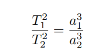
Через гравитационную постоянную \(G\) и массу Солнца \(M\):
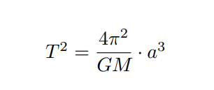
Отсюда для круговой орбиты:
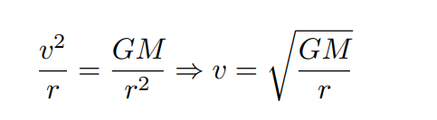
Таким образом, скорость убывает обратно пропорционально корню из расстояния. При увеличении расстояния в 4 раза скорость уменьшается вдвое. Это свойство отражает дальнодействующий характер гравитации.
3.2 Проверка закона на данных Солнечной системы
В астрономических единицах (а.е.) и годах выполняется \(a^3 = T^2\). Отклонения не превышают 0,5%, что подтверждает закон с высокой точностью.
3.3 Начальные скорости в модели диска
В компьютерной модели формирования планетной системы частицы должны иметь скорости, соответствующие третьему закону Кеплера. В декартовых координатах:
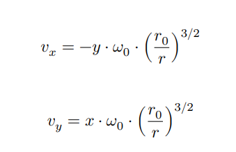
Показатель 3/2 связан с зависимостью
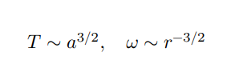
3.4 Протопланетный диск
Согласно небулярной теории, Солнечная система сформировалась из газопылевого облака. Из-за сохранения момента импульса при сжатии облако сплющивается в диск.
- Внутренняя зона (меньш 3 а.е.) – формируются каменистые планеты
- Снеговая линия (~3–5 а.е.) – граница конденсации летучих веществ (H₂O, NH₃, CH₄).
- Внешняя зона (> 5 а.е.) – формируются газовые гиганты.
3.5 Этапы формирования планет
- Аккреция пыли – рост частиц от мм до см.
- Планетезимали – тела километрового размера.
- Протопланеты – объекты лунного и земного масштаба.
- Финальное формирование – очистка орбит и захват газа.
4 Описание модели образования планетной системы
4.1 Введение и цель моделирования
Моделирование направлено на изучение одного из этапов эволюции протопланетного диска — аккреции и формирования сгустков вещества (протопланет) под действием гравитационных сил, а также их взаимодействия. В данной модели дискретные частицы (газопылевые облака) взаимодействуют друг с другом посредством гравитации, а при столкновениях испытывают упругое отталкивание и трение, что в конечном итоге может приводить к их слиянию (аккреции).
4.2 Геометрия и начальные условия
Распределение частиц. В начальный момент времени моделируется система из \(N\) частиц, распределенных в плоскости диска (2D модель) или в объеме (3D модель). Распределение является осесимметричным и равномерным по площади. Для двумерного случая радиус-вектор частицы задаётся с использованием метода обратного преобразования:
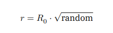
Начальные скорости. Диск вращается по закону Кеплера. Угловая скорость
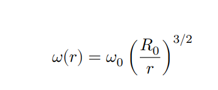
. Компоненты скорости: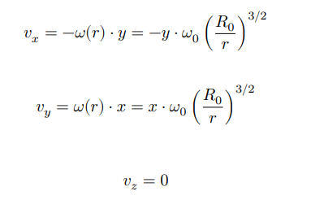

4.3 Силы взаимодействия
Полная сила, действующая на i-ю частицу:
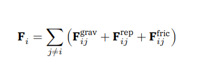
4.3.1 Гравитационное взаимодействие
Потенциальная энергия:
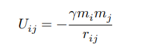
. Сила: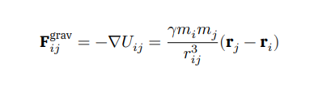
4.3.2 Отталкивание при контакте
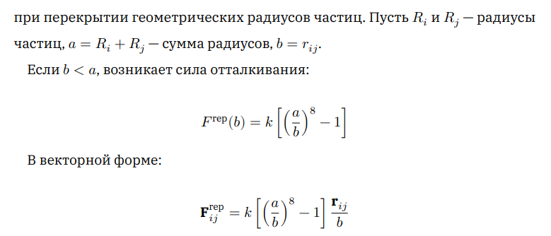
4.3.3 Сила трения (диссипация)
При контакте частиц возникает тангенциальное трение. Модуль силы трения:
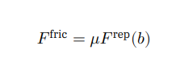
где Wperp – относительная тангенциальная скорость с учётом вращения частиц.
4.4 Вращение частиц (спин)
Момент инерции однородного шара: \(I_i = \frac{2}{5} m_i R_i^2\). Момент силы трения:
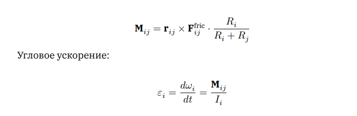
4.5 Слипание (аккреция)
При слиянии частиц образуется новая с параметрами:
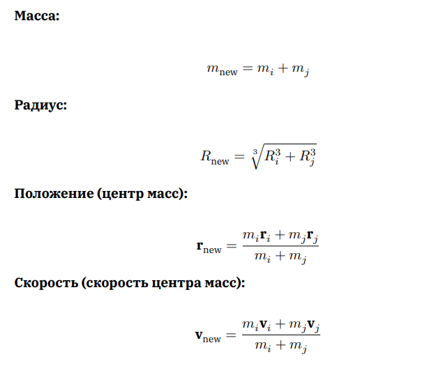
Угловая скорость находится из закона сохранения момента импульса.
4.6 Энергетические соотношения
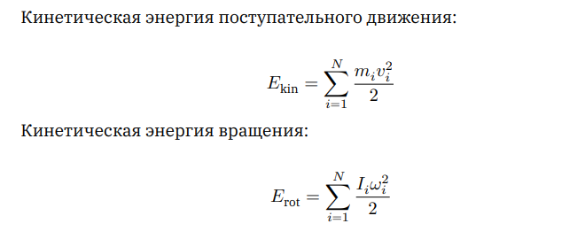
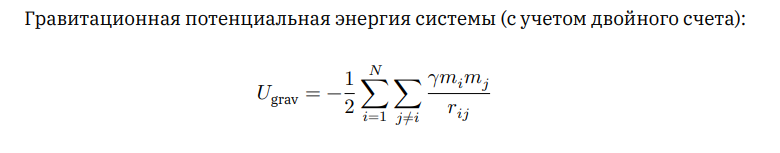
Полная механическая энергия не сохраняется из-за трения; диссипированная энергия
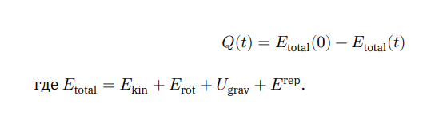
4.7 Численный метод
Интегрирование уравнений движения производится по алгоритму Верле (Verlet) или его скоростной модификации.
Позиционный вариант Верле:
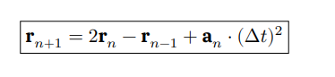
Скоростной алгоритм Верле:
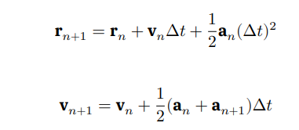
Для ускорения вычислений гравитационных взаимодействий при больших \(N\) применяются метод «частица–сетка» (Particle‑Mesh, сложность \(O(N\log N)\)) или быстрое мультипольное разложение (FMM, сложность \(O(N)\) или \(O(N\log N)\)).
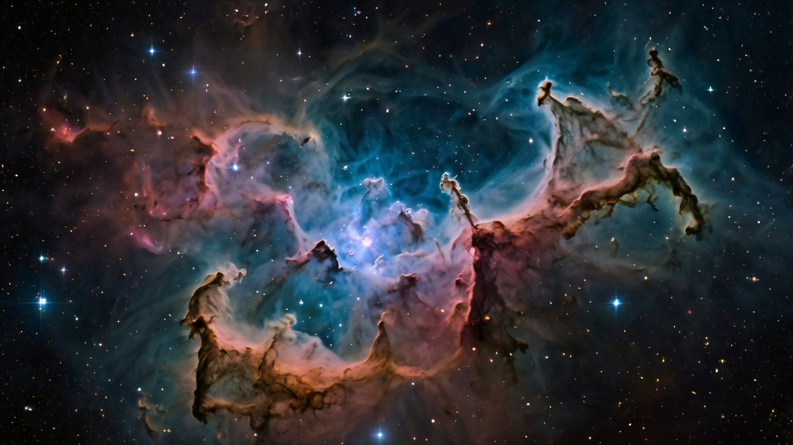
5 Заключение
На первом этапе проекта выполнен обзор современных представлений о формировании звезд и планетных систем. Рассмотрены ключевые этапы эволюции протопланетного диска, включая роль гравитационной неустойчивости, закона сохранения момента импульса и кеплеровского характера вращения вещества. На основе анализа литературных источников предложена математическая модель, описывающая динамику частиц в протопланетном диске. В рамках модели предусмотрены гравитационное взаимодействие, упругое отталкивание и трение при контактах частиц, а также механизм аккреции. Для численной реализации предложено использовать алгоритм Верле, а для ускорения вычислений — методы Particle‑Mesh или Fast Multipole Method. Таким образом, на текущем этапе сформирована теоретическая основа и предложена модель для последующей программной реализации.
Список литературы: Медведев Д.А. и др. Моделирование физических процессов и явлений на ПК. – Новосибирск: НГУ, 2010; Сурдин В.Г. Рождение звезд. – М.: Едиториал УРСС, 2001; Лифшиц Е.М., Питаевский Л.П. Теоретическая физика. Т.1: Механика. – М.: Наука, 2004; Armitage P.J. Astrophysics of Planet Formation. – Cambridge University Press, 2010; Томилин А.Н. Занимательная космогония. – М.: Проспект, 2022; Бааде В. Эволюция звезд и галактик. – М.: УРСС, 2002; Фридман А.А., Леметр Ж., Гамов Г.А. Теория расширяющейся Вселенной и Большого взрыва.
Команда проекта
Математическое моделирование
Тойчубекова А.Н., Четвергова М.В., Просина К.М., Чигладзе М.В., Митрофанов Т.А.